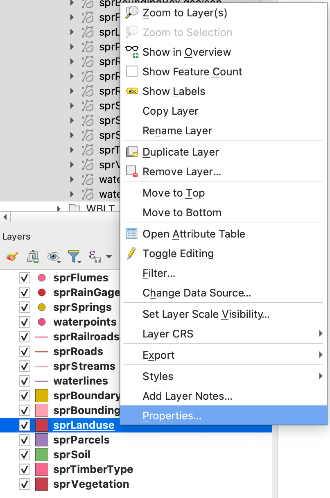

- Download
SPR_data.ziphere (right-click and “save link as”) - Extract the file (Linux, Windows, Mac), and place in appropriate file location (Remember, organize your files!)
- Open QGIS
Symbology - categorized
- Right click the “sprLanduse” layer
- Go to properties
- Select the symbology tab
- Go to properties
- Experiment with basic symbology
- Right click the “sprLanduse” layer
- Go to properties
- Select the symbology tab
- From the dropdown menu, select “categorized”
- Select “LUtype” from the “Value” dropdown menu, and click “Classify”
- From the dropdown menu, select “categorized”
- Select the symbology tab
- Go to properties
- Right click the “sprLanduse” layer
